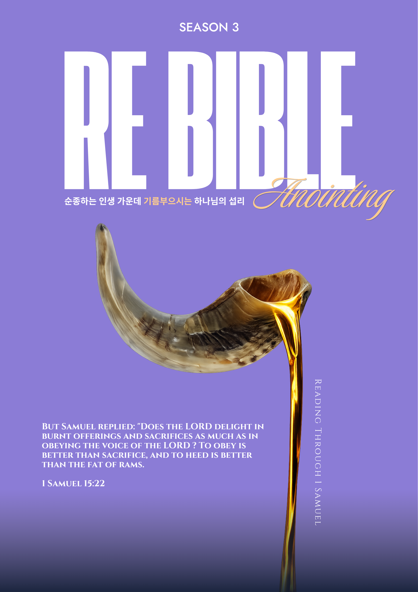
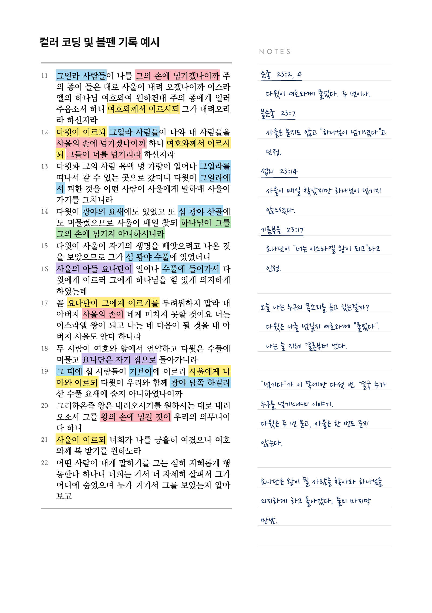
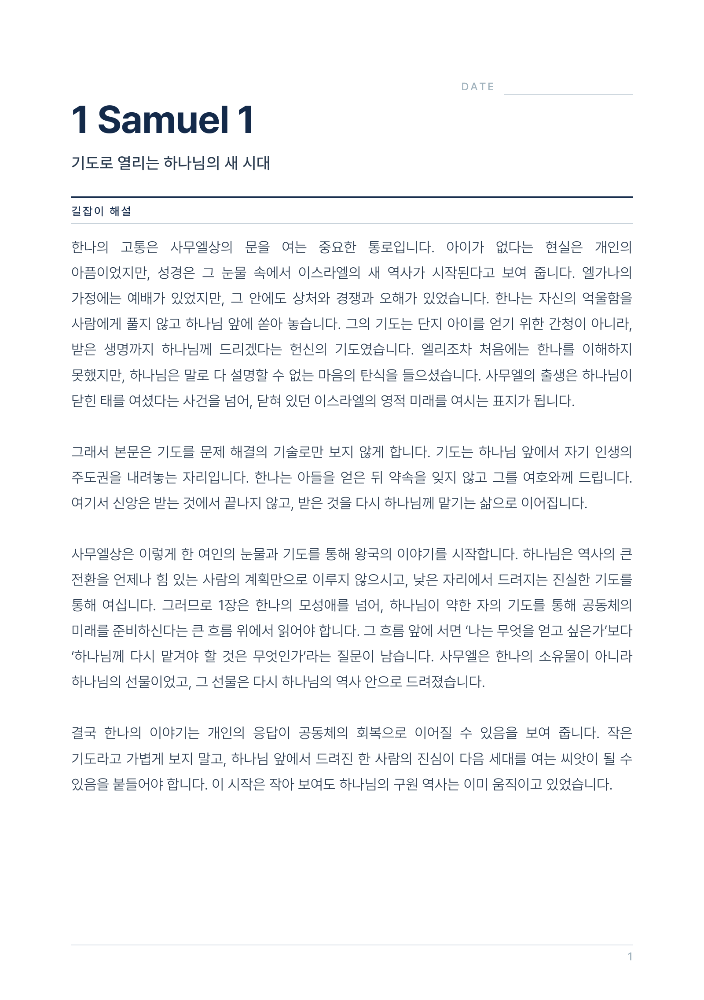
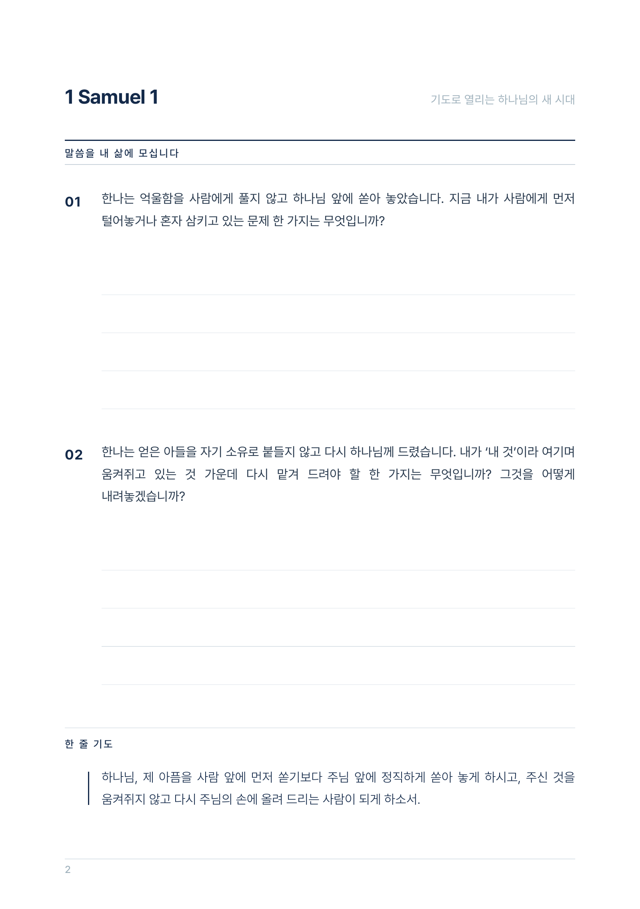
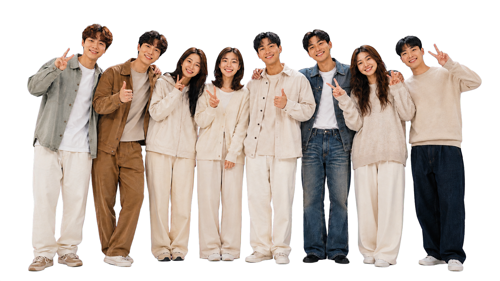

성경을 읽어보겠다고 결심했지만 여러 이유로 이어가지 못했거나, 메마른 말씀의 은혜를 회복하며 다시 하나님과 교제하고 싶은 모든 청년을 위한 성경 통독 모임입니다.
바쁘고 분주한 일상을 살아가다 보면 어느 순간 말씀 읽기가 삶의 중심에서 멀어져 있음을 발견하게 됩니다. RE BIBLE은 성경을 함께 읽으며 삶 깊숙이 스며드는 하나님의 사랑과 따뜻한 은혜를 다시 만나는 시간이자, 말씀 안에서 하나님과 새롭게 동행하는 자리입니다.
특별히 이번 RE BIBLE 시즌 3에서는 하반기 GBS 교재인 ‘다윗’과 연계하여, 다윗의 이야기가 시작되는 사무엘상을 4주간 함께 통독합니다.
사무엘상에 담긴 사무엘과 사울, 다윗의 이야기를 따라가며 하나님께서 어떤 사람을 찾으시고 세워 가시는지 함께 묵상하고자 합니다.
성경에 관한 특별한 지식이 없어도 괜찮습니다. 혼자 읽다가 중간에 포기했던 분도, 사무엘상을 처음 읽는 분도 열린 마음만 있다면 누구나 함께할 수 있습니다.
4주간의 통독 여정을 통해 말씀 안에서 나 자신을 새롭게 발견하고, 매일 말씀을 붙들며 살아가는 기쁨과 은혜를 함께 누리기를 소망합니다. 여러분을 진심으로 환영합니다.
각자의 삶의 자리에서 하루에 1장씩 사무엘상을 읽습니다. 해당 말씀에 대한 내용을 자유롭게 밑줄 그으며, 주시는 말씀을 옆 Notes란에 기록합니다.
매일 사무엘상을 1장씩 읽으며 각 장에 해당되는 가이드 말씀과 묵상을 적용하며 삶으로 실천하는 내지를 제공합니다. 그냥 읽기만으로는 어렵던 성경말씀이 가이드 말씀과 삶으로의 적용을 통해 은혜를 풍성히 누립니다.
8/22, 8/29, 9/12, 9/19 오전 8시. 각자가 읽고 묵상한 말씀을 함께 나누고 교제하는 시간을 갖습니다. 한 주간 기록하고 묵상했던 말씀을 모임에 참여한 청년들과 함께 나누며 은혜를 흘려보내세요.

Bible Journaling
하루 한 장의 말씀을 천천히 읽으며 하나님께서 주시는 묵상의 내용과 몰랐던 사실들, 기록하고 싶은 것들을 자유롭게 기록하며 말씀의 중요한 부분에 형광펜으로 밑줄 그어보세요.
컬러 코딩과 볼펜 기록이 어려운 분들에게 어떻게 해야 할지 가이드도 제공되니, 걱정하지 마세요.
어렵던 성경 읽기 걱정하지 마세요. 매일 한 장씩 제공되는 길잡이 해설과 말씀을 내 삶에 적용하는 ‘말씀을 내 삶에 모십니다’도 있습니다. 말씀을 통해 삶이 달라지는 기적을 경험해보세요.


Weekly Gathering

매일 한 장씩 읽은 말씀을 품고
매주 함께 모입니다.
한 주 동안 읽고 기록한 사무엘상 말씀을 나누고, 각자의 삶 가운데 역사하신 하나님의 메시지와 음성을 공동체와 함께 나눠주세요! : )
RE BIBLE Season 3 · Reading through I Samuel